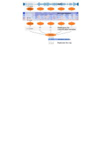

Audio Classification using Machine Learning
Jon Nordby @jononor
EuroPython 2019, Basel
Introduction
Jon Nordby
Internet of Things specialist
- B.Eng in Electronics (2010)
- 9 years as Software developer. Embedded + Web
- M.Sc in Data Science (2019)
Today
- Consulting on IoT + Machine Learning
- CTO @ Soundsensing.no
This talk
Goal
a machine learning practitioner
without prior knowledge about sound processing
can solve basic Audio Classification problems
Outline
- Introduction
- Audio Classification pipeline
- Tips & Tricks
- Pointers to more information
Slides and more: https://github.com/jonnor/machinehearing
Applications
Audio sub-fields
- Speech Recognition. Keyword spotting.
- Music Analysis. Genre classification.
- General / other
Examples
- Eco-acoustics. Analyze bird migrations
- Wildlife preservation. Detect poachers in protected areas
- Manufacturing Quality Control. Testing electric car seat motors
- Security: Highlighting CCTV feeds with verbal agression
- Medical. Detect heart murmurs
Digital sound primer
Audio Mixtures

Audio acquisition

Digital sound representation
- Quantized in time (ex: 44100 Hz)
- Quantizied in amplitude (ex: 16 bit)
- N channels. Mono/Stereo
- Uncompressed formats: PCM .WAV
- Lossless compression: .FLAC
- Lossy compression: .MP3
Spectrogram
Computed using Short-Time-Fourier-Transform (STFT)

Practical example
Environmental Sound Classification
Given an audio signal of environmental sounds,
determine which class it belongs to
- Widely researched. 1000 hits on Google Scholar
- Open datasets. ESC-50, Urbansound8k (10 classes), AudioSet (632 classes)
- 2017: Human-level performance (on ESC-50)
Urbansound8k
State-of-the-art accuracy: 79% - 82%
Basic Audio Classification pipeline
Pipeline

Analysis windows

Mel-filters

Normalization
- log-scale compression
- Subtract mean
- Standard scale

Feature preprocessing
def load_audio_windows(path, ...):
y, sr = librosa.load(path, sr=samplerate)
S = librosa.core.stft(y, n_fft=n_fft,
hop_length=hop_length, win_length=win_length)
mels = librosa.feature.melspectrogram(y=y, sr=sr, S=S,
n_mels=n_mels, fmin=fmin, fmax=fmax)
# Truncate at end to only have windows full data. Alternative: zero-pad
start_frame = window_size
end_frame = window_hop * math.floor(float(frames.shape[1]) / window_hop)
windows = []
for frame_idx in range(start_frame, end_frame, window_hop):
window = mels[:, frame_idx-window_size:frame_idx]
mels = numpy.log(window + 1e-9)
mels -= numpy.mean(mels)
mels /= numpy.std(mels)
assert mels.shape == (n_mels, window_size)
windows.append(mels)
return windowsConvolutional Neural Network
1: Spectrograms are image-like
2: CNNs are best-in-class for image-classification
=> Will CNNs work well on spectrograms?
Yes!
A bit suprising?
SB-CNN
Keras model
from keras.layers import ...
def build_model(...):
block1 = [
Convolution2D(filters, kernel, padding='same', strides=strides,
input_shape=(bands, frames, channels)),
MaxPooling2D(pool_size=pool),
Activation('relu'),
]
block2 = [
Convolution2D(filters*kernels_growth, kernel, padding='same', strides=strides),
MaxPooling2D(pool_size=pool),
Activation('relu'),
]
block3 = [
Convolution2D(filters*kernels_growth, kernel, padding='valid', strides=strides),
Activation('relu'),
]
backend = [
Flatten(),
Dropout(dropout),
Dense(fully_connected, kernel_regularizer=l2(0.001)),
Activation('relu'),
Dropout(dropout),
Dense(num_labels, kernel_regularizer=l2(0.001)),
Activation('softmax'),
]
layers = block1 + block2 + block3 + backend
model = Sequential(layers)
return modelAggregating analysis windows
from keras import Model
from keras.layers import Input, TimeDistributed, GlobalAveragePooling1D
def build_multi_instance(base, windows=6, bands=32, frames=72, channels=1):
input = Input(shape=(windows, bands, frames, channels))
x = input
x = TimeDistributed(base)(x)
x = GlobalAveragePooling1D()(x)
model = Model(input,x)
return modelGlobalAveragePooling -> “Probabilistic voting”
Demo
Demo video
Environmental Sound Classification on Microcontrollers using Convolutional Neural Networks

Tips and Tricks
Data Augmentation

- Adding noise. Random/sampled
- Mixup: Mixing two samples
Transfer Learning from images
Transfer Learning from image data works
=> Can use models pretrained on ImageNet
Caveats:
- If RGB input, should to fill all 3 channels
- Multi-scale,
- Usually need to fine tune. Some or all layers
Audio Embeddings
- Model pretrained for sound, feature-extracting only
- Uses a CNN under the hood
Look, Listen, Learn ({L^3}). 1 second, 512 dimensional vector
import openl3
Annotating audio

Outro
Summary
Pipeline
- Fixed-length analysis windows
- log-mel spectrograms
- ML model
- Aggregate analysis windows
Models
- Audio Embeddings (OpenL3) + simple model (scikit-learn)
- Convolutional Neural Networks with Transfer Learning (ImageNet etc)
- … train simple CNN from scratch …
Data Augmentation
- Time-shift
- Time-stretch, pitch-shift, noise-add
- Mixup, SpecAugment
More learning
Slides and more: https://github.com/jonnor/machinehearing
Hands-on: TensorFlow tutorial, Simple Audio Recognition
Book: Computational Analysis of Sound Scenes and Events (Virtanen/Plumbley/Ellis, 2018)
Questions
Slides and more: https://github.com/jonnor/machinehearing
?
Interested in Audio Classification or Machine Hearing generally? Get in touch!
Twitter: @jononor
BONUS
Audio Event Detection
Return: time something occurred.
- Ex: “Bird singing started”, “Bird singing stopped”
- Classification-as-detection. Classifier on short time-frames
- Monophonic: Returns most prominent event
Aka: Onset detection
Segmentation
Return: sections of audio containing desired class
- Postprocesing on Event Detection time-stamps
- Pre-processing to specialized classifiers
Tagging
Return: All classes/events that occurred in audio.
Approaches
- separate classifiers per ‘track’
- joint model: multi-label classifier
Streaming
Real-time classification
TODO: document how to do in Python
Mel-Frequency Cepstral Coefficients (MFCC)
- MFCC = DCT(mel-spectrogram)
- Popular in Speech Detection
- Compresses: 13-20 coefficients
- Decorrelates: Beneficial with linear models
On general audio, with strong classifier, performs worse than log mel-spectrogram
End2End learning
Using the raw audio input as features with Deep Neural Networks.
Need to learn also the time-frequency decomposition, normally performed by the spectrogram.
Actively researched using advanced models and large datasets.
TODO: link EnvNet